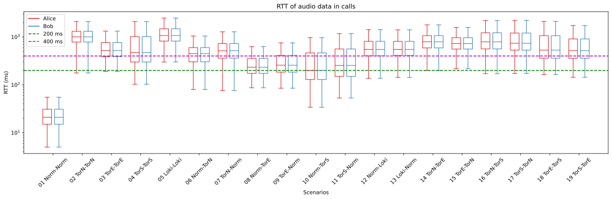
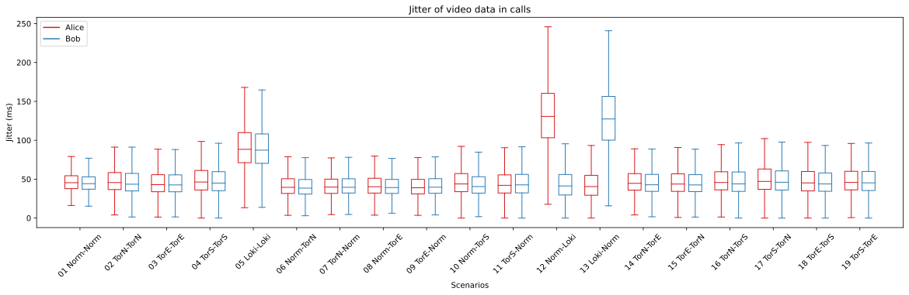
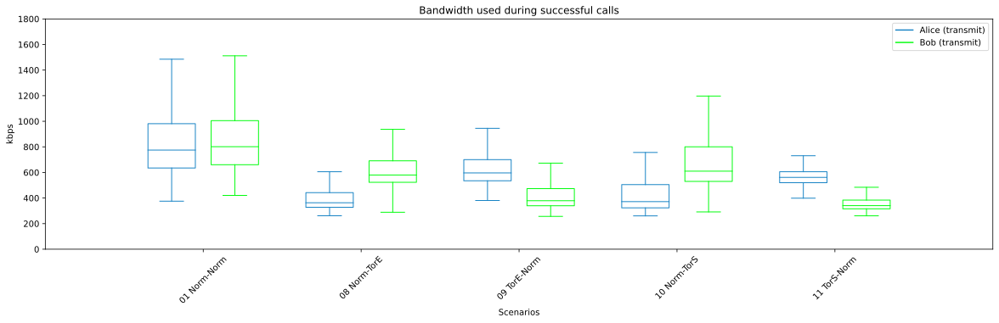

Data processing
This Readme describes how to get started with the data processing and shows the results of the experiment.
Data Access
To get access to the data please read the DataAccess document.
Scenario list
To shorten some of the naming, the plots follow the abbreviation scheme the individual clients (c1-c6 and d1-d6) is configured to the specific setup.
| Networking type | abbreviation |
|---|---|
| Normal | Norm |
| Tor (Normal) | TorN |
| Tor (Europe) | TorE |
| Tor (Scandinavia) | TorS |
| Lokinet | Loki |
The following tabels are the different scenarios which is being tested. Here c1 referees to the client c1, which can be seen in the Deployment documentation.
One to one
| Name | Setup |
|---|---|
| 01 Norm-Norm | Alice, Norm(c1) → Turn ← Norm(d1), Bob |
| 02 TorN-TorN | Alice, TorN(c2) → Turn ← TorN(d2), Bob |
| 03 TorE-TorE | Alice, TorE(c3) → Turn ← TorE(d3), Bob |
| 04 TorS-TorS | Alice, TorS(c4) → Turn ← TorS(d4), Bob |
| 05 Loki-Loki | Alice, Loki(c6) → Turn ← Loki(d6), Bob |
Normal to Anonymized in pairs
| Name | Setup |
|---|---|
| 06 Norm-TorN | Alice, Norm(c1) → Turn ← TorN(d2), Bob |
| 07 TorN-Norm | Alice, TorN(c2) → Turn ← Norm(d1), Bob |
| 08 Norm-TorE | Alice, Norm(c1) → Turn ← TorE(d3), Bob |
| 09 TorE-Norm | Alice, TorE(c3) → Turn ← Norm(d1), Bob |
| 10 Norm-TorS | Alice, Norm(c1) → Turn ← TorS(d4), Bob |
| 11 TorS-Norm | Alice, TorS(c4) → Turn ← Norm(d1), Bob |
| 12 Norm-Loki | Alice, Norm(c1) → Turn ← Loki(d6), Bob |
| 13 Loki-Norm | Alice, Loki(c6) → Turn ← Norm(d1), Bob |
Tor to Tor in pairs
| Name | Setup |
|---|---|
| 14 TorN-TorE | Alice, TorN(c2) → Turn ← TorE(d3), Bob |
| 15 TorE-TorN | Alice, TorE(c3) → Turn ← TorN(d2), Bob |
| 16 TorN-TorS | Alice, TorN(c2) → Turn ← TorS(d4), Bob |
| 17 TorS-TorN | Alice, TorS(c4) → Turn ← TorN(d2), Bob |
| 18 TorE-TorS | Alice, TorE(c3) → Turn ← TorS(d4), Bob |
| 19 TorS-TorE | Alice, TorS(c4) → Turn ← TorE(d3), Bob |
For each test call, there will be created logs that goes to the Mongo database. In the calls table the following will be present: which scenario is started, the outcome of the call and when each client detected the session started and ended. The ObserveRTC logs will go to the reports table, where the WebRTC specific data is located.
Preprocessing
To get data ready for processing, run the ExtractRawData notebook. This will connect to the MongoDB and gather the call stats, do som basic data transformation and save it to CSV files, which will be overwritten each time the script is called. The outcome will be the following files:
output_folder/uniqueCallsAndOutcomes.csvoutput_folder/rawReport/c1-Normal.csvoutput_folder/rawReport/c2-TorNormal.csvoutput_folder/rawReport/c3-TorEurope.csvoutput_folder/rawReport/c4-TorScandinavia.csvoutput_folder/rawReport/c6-Lokinet.csvoutput_folder/rawReport/d1-Normal.csvoutput_folder/rawReport/d2-TorNormal.csvoutput_folder/rawReport/d3-TorEurope.csvoutput_folder/rawReport/d4-TorScandinavia.csvoutput_folder/rawReport/d6-Lokinet.csv
Next, run the SuccessfulCallsStartAndEnd notebook, this will for the scenarios 1, 8, 9, 10 and 11 find the start and end timestamps of all the successful calls. The outcome will be the file:
output_folder/SuccessfulCallsStartAndEnd.csv.
Next, to get the bandwidth usage data, run the BandwidthDataExtractionTransmit and the BandwidthDataExtractionReceive notebooks. The outcome will be the files:
output_folder/SuccessfulCallsUsedTransmitBandwidth.csvoutput_folder/SuccessfulCallsUsedTransmitBandwidthValues.csvoutput_folder/SuccessfulCallsUsedReceiveBandwidth.csvoutput_folder/SuccessfulCallsUsedReceiveBandwidthValues.csv
Now all preprocessing is complete.
Results
This section will show the results of the experiment that was gathered during the project. Also each sub section will describe which notebooks have been used to generate the specific plots.
Success or fail overview
The total success and failure rate of the calls can be seen in the SuccessOrFail notebook.
And provides the following graph:

Success rate over time
The success rate over time can be seen in the SuccessRateOverTime notebook.
And provides the following graph:


Note: Client C4 started to have a technical error from the 2023-01-15. That is the reason for 4 scenarios completely failing from that time and forward.
RTT in successful calls
Plot for RTT of video and audio on successful calls. Created in the RoundTripTimeBoxPlot notebook.





Jitter in successful calls
Plot for Jitter of video and audio on successful calls. Created in the JitterBoxPlot notebook.



Average jitter buffer delay
Plot for Average jitter of video and audio on successful calls. Created in the JitterBufferDelayBoxPlot notebook


Bandwidth used
Plot for the total bandwidth used during successful calls. Created in the BandwidthUsedPlots notebook.



Validation
To validate the results it can be related to the metrics from the material in external material.
Graph of throughput in the Tor network during the experiment. Source

Graph of latencies in the Tor network during the experiment. Source